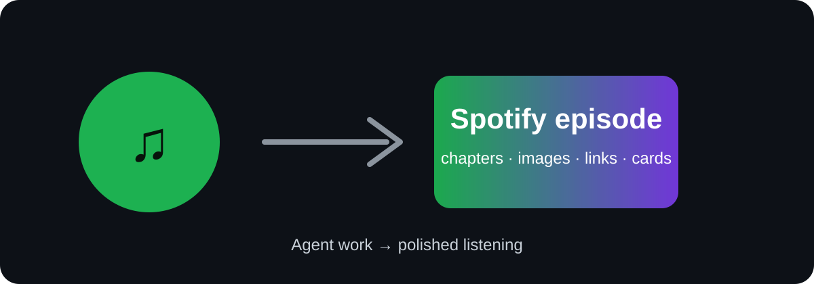

Save to Spotify
The official Spotify skill for saving agent-made audio to Spotify.
Turn files, notes, links, transcripts, or generated audio into Spotify episodes with cover art, chapters, timeline images, links, and Spotify cards.
OfficialSkills · ClawHub · Install · Safety
What it does
Save to Spotify lets an agent create or upload audio and save it where you already listen.
Use it for placeholder workflows like:
[placeholder source]→ Spotify episode[placeholder source material]→ polished audio output[placeholder repeatable listening workflow][placeholder internal notes / updates / docs]→ audio

Install
Prompt your agent to install:
> Install Save to Spotify by running https://saveto.spotify.com/install.shOr run it yourself:
curl -fsSL https://saveto.spotify.com/install.sh | bashThen authenticate once:
save-to-spotify auth login
save-to-spotify doctorOther install paths:
openclaw skills install @spotify/save-to-spotify
npx skills add spotify/save-to-spotifyExample prompt
Turn [placeholder source] into a [placeholder duration] Spotify episode.
Use [placeholder style].
Save it to [placeholder show].
Preview before uploading.What it can produce
- audio upload: MP3, M4A, WAV, OGG
- show and episode metadata
- cover image
- chapters
- timeline images
- source links
- Spotify entity cards
- readiness checks
Safety
The skill should preview and ask before it writes to Spotify.
It should clearly show:
- active Spotify account
- requested OAuth scopes
- read-only vs write actions
- what will be created or changed
- how to validate the result
Useful checks:
save-to-spotify auth status
save-to-spotify doctor
save-to-spotify --json timeline validate --from-file timeline.jsonFor agent builders
Design principles:
- intent over commands
- ask fewer, better questions
- preview before mutation
- show observable outputs
- recover clearly from auth, rate limits, or partial failures
- keep future Spotify workflows composable
Placeholder assets
Replace these before launch:
assets/hero-placeholder.svgassets/episode-card-placeholder.svgassets/timeline-preview.svgassets/oauth-scope-preview.svgassets/workflow-gallery.svg